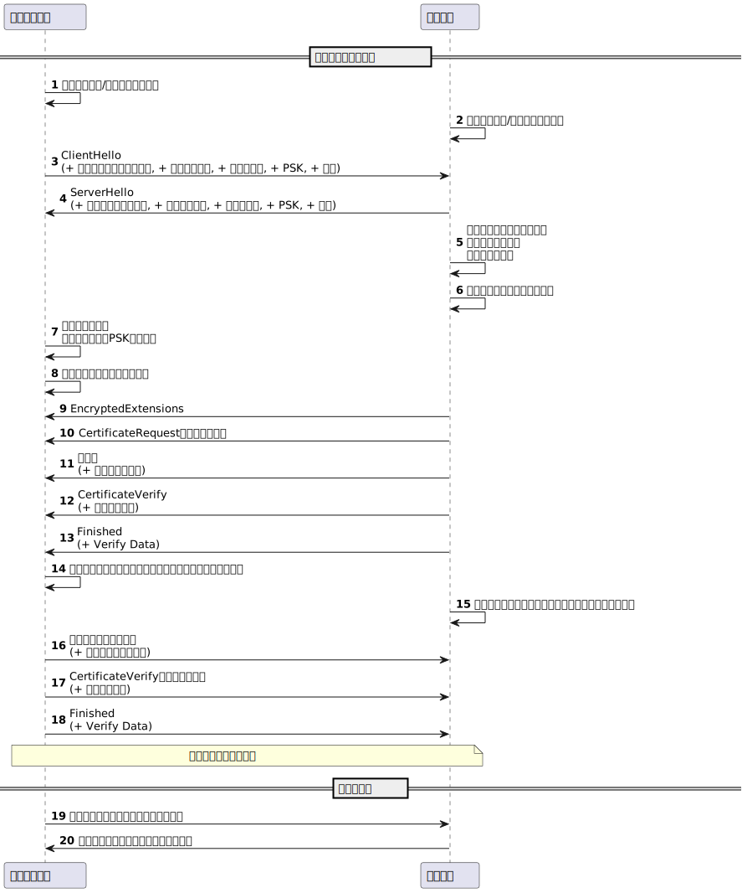

TLSのRPCを読むために
目的
実際に実装することでTLSをざっくり知る。
参考に使えるやつ
The Illustrated TLS 1.3 Connection
実装
Rustlsはもちろん使用しない。
- 非同期ランタイムはtokioを使用する
- 暗号のライブラリを使用するRust Crypto
- その他できるだけライブラリは使う
tlsは主に二つにの主要コンポーネントで構成されている。
- 通信相手を認証し、暗号化モードとパラメーターをネゴシエートし、共有キー情報を確立するハンドシェイクプロトコル（セクション4）。 ハンドシェイクプロトコルは、改ざんに耐えるように設計されています。 アクティブな攻撃者は、接続が攻撃を受けていない場合にピアとは異なるパラメータをネゴシエートさせることはできません。
- ハンドシェイクプロトコルによって確立されたパラメータを使用して、通信するピア間のトラフィックを保護するレコードプロトコル（セクション5）。 レコードプロトコルは、トラフィックを一連のレコードに分割します。各レコードは、トラフィックキーを使用して個別に保護されます。
DH鍵共有を使って公開鍵方式を用いて通信し共有鍵を共有する。
- とりあえずミニマムで実装パターン。
- 全体像何をしているのか。
TLS 1.3 シーケンス図

用語
- ClientHello: クライアントからサーバーへの最初のメッセージ。サポートするバージョン、暗号スイート、キーシェア、PSK、拡張などの情報を含む。
- ServerHello: サーバーからクライアントへの応答メッセージ。選択したバージョン、暗号スイート、キーシェア、PSK、拡張などの情報を含む。
- EncryptedExtensions: サーバーからクライアントへの暗号化された拡張情報を含むメッセージ。
- CertificateRequest: サーバーからクライアントへの証明書要求メッセージ。オプションであり、クライアント認証が必要な場合に送信される。
- Certificate: サーバーからクライアントへの証明書を含むメッセージ。サーバー証明書を含む。
- CertificateVerify: デジタル署名を含むメッセージ。証明書が正当であることを証明するために送信される。
- Finished: ハンドシェイクが完了したことを示すメッセージ。Verify Dataを含む。
- Application Data: クライアントとサーバー間で交換される暗号化されたアプリケーションデータ。
- PSK (Pre-Shared Key): 事前に共有された秘密鍵。通信相手との間で共有され、通信の安全性を確保するために使用される。
- Key Share: クライアントとサーバー間で共有される鍵交換の情報。
- Signature Algorithms: サーバーがサポートする署名アルゴリズムのリスト。
- Pre-Shared Key: クライアントとサーバー間で事前に共有された秘密鍵。
- Extensions: クライアントとサーバー間で交換される追加の情報。
いざ実装
echo server作ろう
そしたらやり取りができる！
tokio ioをうまくやるための非同期ランタイムだから当然ネットワークのIOもやれるはず！
ってことでTCP Echoを作ってみよう
Server https://docs.rs/tokio/1.32.0/tokio/index.html#examples
Client https://docs.rs/tokio/1.32.0/tokio/net/struct.TcpStream.html#examples
exampleを参考にして、サーバーとクライアント、やりとりができるものを最小で作ろう
cargo run -p server
cargo run -p client
dbg!でログを仕込み以下を実行する
cargo run -p server
cargo run -p client
以下のようなログが表示される
learning-with-oss/impl-tlscargo run -p server
Compiling server v0.1.0 (/Users/megumish/github/learning-with-oss/impl-tls/server)
Finished dev [unoptimized + debuginfo] target(s) in 0.28s
Running `target/debug/server`
[server/src/main.rs:26] n = 12
[server/src/main.rs:27] &buf[0..n] = [
104,
101,
108,
108,
111,
32,
119,
111,
114,
108,
100,
33,
]